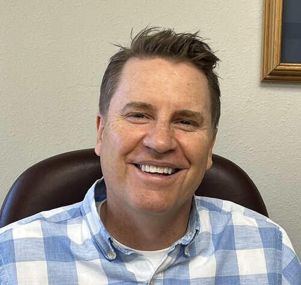

In most cases a patient has seen their general dentist and has been referred to our office for root canal treatment on a specific tooth. However, if you are experiencing tooth pain feel free to call our office and we can help direct you to what your next step will be.
Meet Dr. Thornton


Dr. Justin Thornton was raised in Lima, Montana. While attending college in Idaho, he married his wife, Janet Jenson. They moved to Virginia where he attended dental school at Virginia Commonwealth University. Upon graduating in 1996, he was accepted into the 2-year endodontic residency program at the VCU School of Dentistry. While completing the residency program, he was trained in the latest endodontic techniques including the use of the surgical operating microscope which he uses to complete all treatments.
Upon graduating in 1998, he and his wife moved to Cache Valley where he opened up a practice limited to endodontics near the hospital. Together they are the parents of 4 children and 2 grandchildren. Justin enjoys spending time in Montana, golfing, and attending Utah State Aggie games.
Active member of the American Association of Endodontists since 1996.
What is a root canal?
A “root canal” is short for root canal treatment. Which is the removal of pulp tissue from the inside of the tooth and the sealing of that space with a biocompatible material.
The Process
- The area is anesthetized or “numbed”.
- The tooth is isolated with a rubber dam.
- Inside of the roots are cleaned, shaped, and irrigated removing all pulp tissue and bacteria.
- Following the disinfection process, the space is filled with biocompatible material.
Learn more at the American Association of Endodontics website.

FAQ's
We submit claims to most insurance companies. Please call our office to see if we are an in-network provider. (435)755-6955
Our office does provide financing options. We give a discount to our patients who do not have insurance. We also give a 5% discount to our patients who pay their account in full on the day of service. We offer no-interest payment plans.

Serving the endodontic needs of patients in northern Utah since 1998.